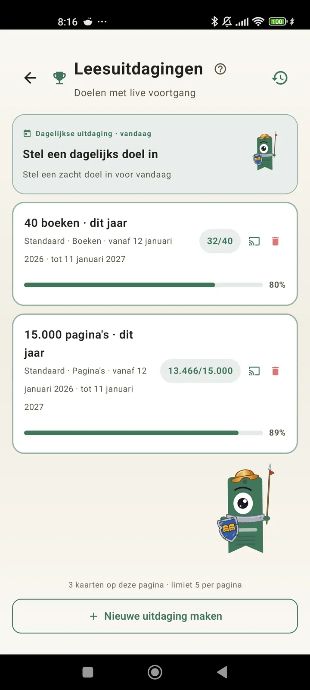

Leer jezelf kennen als lezer
Uitdagingen, bingo's, widgets en meer functies om alles uit je leeswerk te halen. Nieuw in 3.7: widgets voor uitdagingen en bingo.

Leesuitdagingen
Stel doelen op basis van pagina's, reeksen of genres. Tot 15 actieve uitdagingen gratis, onbeperkt met Pro. Plus een aanpasbare dagelijkse uitdaging die niet meetelt voor de limiet.

Dagelijkse uitdaging
Elke dag een nieuw doel. Voltooi de uitdaging voor middernacht om je reeks in stand te houden.

Leesbingo
Elke maand twee nieuwe bingo's met themavakjes. Maak rijen, kolommen of de hele kaart vol.

Weekoverzicht
Elke maandag een momentopname van je week: gelezen pagina's, totale tijd, reeks en hoe het zich verhoudt tot de vorige.

Maandoverzicht
Als een maand voorbij is, vat Lecturameter hem samen: pagina's, tijd, uitgelezen boeken, je tempo per dag en je boek van de maand.

Bingo-widget Pro
De bingokaart van deze maand, altijd in beeld, met de vakjes die je hebt voltooid en de lijnen die je hebt gemaakt.

Boek-widget Gratis
Zie het boek dat je leest direct op je startscherm: omslag, titel, auteur, pagina's en voortgangspercentage, altijd up-to-date. Aanpasbaar in grootte, zodat het past waar jij wilt.
Echt, gast, de app voelt als therapie. Ik ben van een paar pagina's per dag naar zo'n 20 pagina's per dag gegaan en het wordt steeds beterFeedback van een gebruiker, per e-mail gestuurd

Maandvergelijking Pro
Een snelle blik op je laatste maanden zonder de app te openen. Balken met de pagina's per maand en de huidige maand uitgelicht, zodat je in één oogopslag ziet of het deze maand beter of slechter gaat dan vorige maand.

Uitdagingen-widget Pro
Je actieve uitdagingen en hun voortgang op je startscherm. Kies welke je wilt tonen in het scherm Uitdagingen.